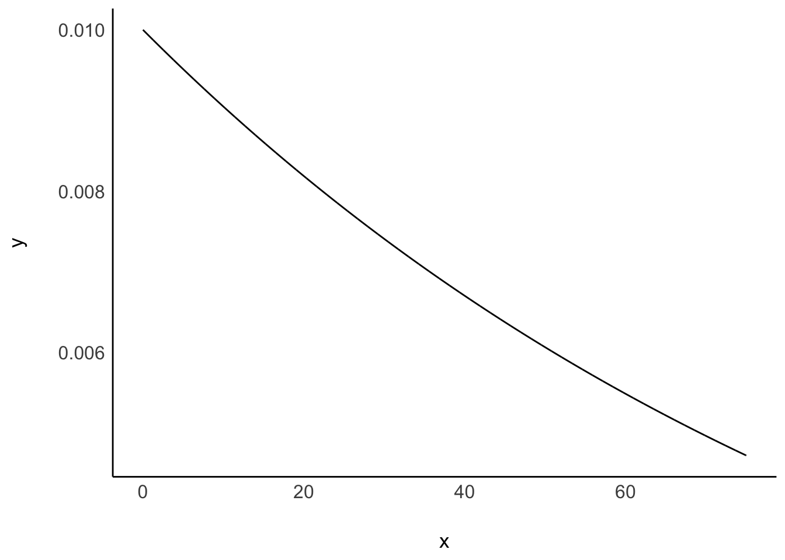

Code
pakete <- c("tidyverse", "rstanarm", "easystats")
install.packages(pakete)
Für dieses Thema benötigen Sie einige R-Pakete, die Sie wie folgt installieren können:
pakete <- c("tidyverse", "rstanarm", "easystats")
install.packages(pakete)Für rstanarm wird weitere Software benötigt.
Software, und das sind R-Pakete, müssen Sie nur einmalig installieren. Aber bei jedem Start von R bzw. RStudio müssen Sie die (benötigten!) Pakete starten.
library(tidyverse)
library(rstanarm)
library(easystats)Dieser Abschnitt basiert auf McElreath (2020), Kap. 4.3.

Quelle Internet Archive Book Images, No restrictions, via Wikimedia Commons]

By Andrewwik.0 - Own work, CC BY-SA 4.0, Quelle]
Kung_path <-
"https://raw.githubusercontent.com/sebastiansauer/Lehre/main/data/Howell1a.csv"
d <- read_csv(Kung_path)
head(d)| height | weight | age | male |
|---|---|---|---|
| 151.765 | 47.82561 | 63 | 1 |
| 139.700 | 36.48581 | 63 | 0 |
| 136.525 | 31.86484 | 65 | 0 |
| 156.845 | 53.04191 | 41 | 1 |
| 145.415 | 41.27687 | 51 | 0 |
| 163.830 | 62.99259 | 35 | 1 |
Wir interessieren uns für die Größe der erwachsenen !Kung:
d2 <- d %>%
filter(age >= 18)\(N=352\).
describe_distribution(d2)| Variable | Mean | SD | IQR | Min | Max | Skewness | Kurtosis | n | n_Missing |
|---|---|---|---|---|---|---|---|---|---|
| height | 154.59709 | 7.74 | 12.06 | 136.53 | 179.07 | 0.15 | −0.48 | 352.00 | 0.00 |
| weight | 44.99049 | 6.46 | 9.19 | 31.07 | 62.99 | 0.13 | −0.51 | 352.00 | 0.00 |
| age | 41.13849 | 15.97 | 23.00 | 18.00 | 88.00 | 0.67 | −0.21 | 352.00 | 0.00 |
| male | 0.46875 | 0.50 | 1.00 | 0.00 | 1.00 | 0.13 | −2.00 | 352.00 | 0.00 |

Own alterations andFile:SVG_Human_With_All_Organs.svg by Madhero88, CC BY-SA 3.0 https://creativecommons.org/licenses/by-sa/3.0, via Wikimedia Commons
\[\mu \sim \mathcal{N}(178, 20)\]
Warum 178 cm? Kein besonderer Grund. Hier wollen wir den Effekt verschiedener Priori-Werte untersuchen. In einer echten Untersuchung sollte man immer einen inhaltlichen Grund für einen Priori-Wert haben. Oder man wählt “schwach informative” Prioris, wie das {rstanarm} tut: Damit lässt man kaum Vorab-Information in das Modell einfließen, aber man verhindert extreme Prioris, die meistens unsinnig sind (so wie eine SD von 100 Metern in diesem Fall).
Wir nehmen an, dass \(\mu\) und \(h_i\) normalverteilt sind und \(\sigma\) exponentialverteilt (da notwendig positiv) ist:
Likelihood:
\(h_i \sim \mathcal{N}(\mu, \sigma)\)
Prior für \(\mu\):
\(\mu \sim \mathcal{N}(178, 20)\)
Prior für \(\sigma\):
\(\sigma \sim \mathcal{E}(0, 0.1)\)
\(95\%KI( \mu):\)
\(178 \pm 40\)
Hier sind unsere Priori-Verteilungen visualisiert:

Zu Erinnerung: Die Posteriori-Wahrscheinlichkeit ist das Ergebnis von Priori-Wahrscheinlichkeit und Likelihood.
Die Körpergrößen der einzelnen Personen \(h_i\) sind normalverteilt mit Mittelwert \(\mu\) und Streuung \(\sigma\):
\[h_i \sim \mathcal{N}(\color{blue}{\mu},\color{green}{\sigma})\]
Mittelwert der Größe ist normalverteilt mit \(\mu=178\) und \(\sigma=20\):
\[\color{blue}{\mu \sim \mathcal{N}(178, 20)}\]
Die Streuung \(\sigma\) der Größen ist exponentialverteil mit \(\lambda = 0.1\).
\[\color{green}{\sigma \sim \mathcal{E}(0.1)}\]

m41m41 <- stan_glm(height ~ 1, data = d2, refresh = 0)
m41_post <- as_tibble(m41)
names(m41_post) <- c("mu", "sigma") # schönere Namen für die SpaltenDas Argument refresh = 0 verhindert, dass die Dateils zum Ziehen der Stichproben am Bildschirm ausgegeben werden. Ich finde diese Ausgabe meist nicht informativ, so dass ich sie lieber unterdrücke.
Für das Modell m41 haben wir keine Prioris spezifiziert. Wir greifen damit auf die Voreinstellung der Prioris von rstanarm zurück. Das ist ok, aber wenn Sie Vorab-Wissen haben, sollten Sie das an rstanarm weitergeben, weil es ja schade wäre, wenn Sie Wissen haben, das von Ihrem Modell nicht genutzt wird.
Plotten wir mal die Posteriori-Verteilung von m41:
m41_post %>%
ggplot() +
aes(x = mu, y = sigma) %>%
geom_hex() +
scale_fill_viridis_c() 
Da das Modell zwei Parameter hat, können wir auch beide gleichzeitig plotten. Wie man sieht, sind die beiden Parameter unkorreliert. In anderen Modellen können die Parameter korreliert sein.
Hier noch eine andere Visualisierung:
p_m41_post <-
m41_post %>%
ggplot() +
aes(x = mu, y = sigma) +
geom_point(alpha = .1)
ggExtra::ggMarginal(p_m41_post, type = "density")
Natürlich können wir auch nur einen Parameter plotten:
m41_post %>%
ggplot(aes(x = mu)) +
geom_histogram()
Wir bekommen eine Wahrscheinlichkeitsverteilung für \(\mu\) und eine für \(\sigma\) (bzw. eine zweidimensionale Verteilung, für die \(\mu,\sigma\)-Paare).
Trotz des eher vagen Priors ist die Streuung Posteriori-Werte für \(\mu\) und \(\sigma\) klein: Die große Stichprobe hat die Priori-Werte überstimmt.
Ziehen wir Stichproben aus der Posteriori-Verteilung, so können wir interessante Fragen stellen.
… wir hätten da mal ein paar Fragen an Sie. 🕵
Antworten folgen etwas weiter unten.
Abschlißend, eigentlich nur Spielerei, noch eine andere Visualisierung der Post-Verteilung von \(\mu\) und von \(\sigma\):
m41_post %>%
pivot_longer(mu:sigma) %>%
ggplot(aes(x = value)) +
geom_density(fill = "grey33") +
scale_y_continuous(NULL, breaks = NULL) +
xlab(NULL) +
theme(panel.grid = element_blank()) +
facet_wrap(~ name, scales = "free",
labeller = label_parsed,
nrow = 2)
stan_glm() berechnenstan_glm() können wir komfortabel die Posteriori-Verteilung berechnen.library(rstanarm) # Paket muss gestartet sein.
# berechnet Post.-Vert.:
stan_glm(
# modelldefinition:
AV ~ UV,
# Datensatz:
data = meine_daten
)Modelldefinition:
\(h_i \sim \mathcal{N}(\mu, \sigma)\), Likelihood
\(\mu \sim \mathcal{N}(155, 19)\), Prior Größenmittelwert
\(\sigma \sim \mathcal{E}(0.13)\), Prior Streuung der Größen
stan_glm()m41 <- stan_glm(height ~ 1, data = d2, refresh = 0) # aus Paket rstanarm
parameters(m41) # aus Paket easystats| Parameter | Median | 95% CI | pd | % in ROPE | Rhat | ESS | Prior |
|---|---|---|---|---|---|---|---|
| (Intercept) | 154.60 | (153.80, 155.42) | 100% | 0% | 1.000 | 2891.00 | Normal (154.60 +- 19.36) |
stan_glm()?
rstanarm stellt Stan für uns bereit.stan_glm() ist für die Berechnung von Regressionsmodellen ausgelegt.heights) schätzen, so hat man man … eine Regression ohne Prädiktor.y ~ 1. Die 1 steht also für die nicht vorhandene UV; y meint die AV (height).MAD_SD ist eine robuste Version der Streuung, mit inhaltlich gleicher Aussage(Intercept) (Achsenabschnitt) gibt den Mittelwert an.Hier die ersten paar Zeilen von post_m41:
post_m41 <- as_tibble(m41)
head(post_m41)| (Intercept) | sigma |
|---|---|
| 154.8693 | 7.958684 |
| 154.0783 | 7.832770 |
| 154.4619 | 7.773516 |
| 154.8380 | 7.826417 |
| 154.4832 | 7.762225 |
| 154.6501 | 7.664231 |
Mit welcher Wahrscheinlichkeit ist \(\mu>155\)?
names(post_m41) <-
c("mu", "sigma") # den Namen "(Intercept)" durch "mu" ersetzen, ist kürzher
post_m41 %>%
count(mu > 155) %>%
mutate(prop = n/sum(n))| mu > 155 | n | prop |
|---|---|---|
| FALSE | 3327 | 0.83175 |
| TRUE | 673 | 0.16825 |
Welche mittlere Körpergröße wird mit 95% Wahrscheinlichkeit nicht überschritten, laut dem Modell m41?
post_m41 %>%
summarise(q95 = quantile(mu, .95))| q95 |
|---|
| 155.2874 |
In welchem 90%-PI liegt \(\mu\) vermutlich?
post_m41 %>%
summarise(pi_90 = quantile(mu, c(0.05, 0.95)))| pi_90 |
|---|
| 153.8988 |
| 155.2874 |
Mit welcher Unsicherheit ist die Schätzung der mittleren Körpergröße behaftet?
m41 %>%
parameters()| Parameter | Median | CI | CI_low | CI_high | pd | ROPE_Percentage | Rhat | ESS | Prior_Distribution | Prior_Location | Prior_Scale |
|---|---|---|---|---|---|---|---|---|---|---|---|
| (Intercept) | 154.5982 | 0.95 | 153.7981 | 155.4165 | 1 | 0 | 1.000277 | 2890.841 | normal | 154.5971 | 19.35583 |
Seeing is believing:
m41 %>%
parameters() %>%
plot(show_intercept = TRUE)
Das Modell ist sich recht sicher: die Ungewissheit der mittleren Körpergröße liegt bei nicht viel mehr als einem Zentimeter (95%-CI).
Was ist der mediane Schätzwert der mittleren Körpergröße, sozusagen der “Best Guess”?
parameters(m41) hat uns die Antwort schon gegeben: Ca. 155 cm.
🏋️ Ähnliche Fragen bleiben als Übung für die Lesis 🤓.
stan_glm()prior_summary(m41)
## Priors for model 'm41'
## ------
## Intercept (after predictors centered)
## Specified prior:
## ~ normal(location = 155, scale = 2.5)
## Adjusted prior:
## ~ normal(location = 155, scale = 19)
##
## Auxiliary (sigma)
## Specified prior:
## ~ exponential(rate = 1)
## Adjusted prior:
## ~ exponential(rate = 0.13)
## ------
## See help('prior_summary.stanreg') for more detailsstan_glm() verwendet (in der Voreinstellung) schwach informative Priori-Werte, die nur wenig Vorabwissen in das Modell geben.
Es werden dafür die Stichproben-Daten als Priori-Daten verwendet.
Man sollte diese Standardwerte als Minimalvorschlag sehen. Kennt man sich im Sachgebiet aus, kann man meist bessere Prioris finden.
Die Voreinstellung hat keinen tiefen Hintergrund; andere Werte wären auch denkbar.
Intercept: \(\mu\), der Mittelwert der Verteilung \(Y\)
Auxiliary (sigma): \(\sigma\), die Streuung der Verteilung \(Y\)
Um ein Gefühl zu bekommen, wieviel Ungewissheit in Exponentialverteilugnen mit verschiedener Streuung liegt, sind hier mal ein paar Varianten dargestellt.

Eine sinnvolle Strategie ist, einen Prior so zu wählen, dass man nicht übergewiss ist, also nicht zu sicher Dinge behauptet, die dann vielleicht doch passieren (also die Ungewissheit zu gering spezifiziert), andererseits sollte man extreme, unplausible Werte ausschleßen.
\(\lambda \approx 0.1\) scheint eine sinnvolle Ungewissheit anzugeben.
Bei der Wahl der Prioris gibt es nicht die eine, richtige Wahl. Die beste Entscheidung ist auf transparente Art den Stand der Forschung einfließen zu lassen und eigene Entscheidungen zu begründen. Häufig sind mehrere Entscheidungen möglich. Möchte man lieber vorsichtig sein, weil man wenig über den Gegenstand weiß, dann könnte man z.B. auf die Voreinstellung von rstanarm vertrauen, die “schwachinformativ” ist, also nur wenig Priori-Information ind das Modell einfließen lässt.
m42: unsere Priori-WerteIm Modell m41 haben wir auf die Priori-Werte der Voreinstellung von rstanarm vertraut. Jetzt lassen wir mal unsere eigenen Priori-Werte einfließen, im Modell m42.
d2 <-
d2 %>%
mutate(height_c = height - mean(height)) # zentrierenm42 <-
stan_glm(height ~ 1,
prior_intercept = normal(178, 20), # mu
prior_aux = exponential(0.1), # sigma
refresh = FALSE, # bitte nicht so viel Ausgabe drucken
data = d2)
parameters(m42)| Parameter | Median | CI | CI_low | CI_high | pd | ROPE_Percentage | Rhat | ESS | Prior_Distribution | Prior_Location | Prior_Scale |
|---|---|---|---|---|---|---|---|---|---|---|---|
| (Intercept) | 154.5993 | 0.95 | 153.8103 | 155.4192 | 1 | 0 | 0.9996511 | 2829.642 | normal | 178 | 20 |
Wir haben noch nicht alle Informationen kennengelernt, die hier ausgegeben werden. Im Zweifel: Einfach ignorieren. Wichtige Fähigkeit im Studium 🤓.
m42 %>%
as_tibble() %>%
ggplot(aes(x = `(Intercept)`)) +
geom_histogram()
Wie man sieht, sind sich die Post-Verteilungen von m41 und m42 ziemlich ähnlich, kommen also zu dem gleichen Schluss, was die mittlere Körpergröße betrifft. Das ist ein Beispiel für eine Situation, wo eine ausreichend große Stichprobe die Wahl der Prioris (sofern nicht extrem) aussticht.
Ein Vergleich mehererer Priori-Werte wäre auch nützlich, um ein skeptisches Publikum von der Wahl (bzw. der Indifferenz) der gewählten Priori-Werte zu überzeugen.
height), haben wir als normalverteilt mit den Parametern \(\mu\) und \(\sigma\) angenommen.🧡 Bleiben Sie dran!

🏎️ Dieser Abschnitt ist eine VERTIEFUNG. 🏎
n <- 1e4
sim <- tibble(sample_mu =
rnorm(n,
mean = 178,
sd = 20),
sample_sigma =
rexp(n,
rate = 0.1)) %>%
mutate(height =
rnorm(n,
mean = sample_mu,
sd = sample_sigma))
height_sim_sd <-
sd(sim$height) %>% round()
height_sim_mean <-
mean(sim$height) %>% round()💭 Was denkt der Golem (m41) apriori von der Größe der !Kung?
🦾 Ziehen wir mal ein paar Stichproben auf Basis des Modells. Voilà:
p3 <-
sim %>%
ggplot(aes(x = height)) +
geom_density(fill = "grey33") +
scale_x_continuous(breaks = c(0, 178-3*height_sim_sd, 178, 178+3*height_sim_sd)) +
scale_y_continuous(NULL, breaks = NULL) +
labs(title = "height ~ dnorm(mu, sigma)",
caption = "X-Achse zeigt MW±3SD",
x = "Größe") +
theme(panel.grid = element_blank())
p3
sim) simuliert Beobachtungen (nur) auf Basis der Priori-Annahmen: \(h_i \sim \mathcal{N}(\mu, \sigma),\) \(\mu \sim \mathcal{N}(178, 20),\) \(\sigma \sim \mathcal{E}(0.1)\)Die Priori-Prädiktiv-Verteilung zeigt, dass unsere Priori-Werte ziemlich vage sind, also einen zu breiten Bereich an Größenwerten zulassen:
p3
Anteil \(h_i > 200\):
anteil_großer_kung <-
sim %>%
count( height > 200) %>%
mutate(prop = n/sum(n))
anteil_großer_kung| height > 200 | n | prop |
|---|---|---|
| FALSE | 8263 | 0.8263 |
| TRUE | 1737 | 0.1737 |
🤔 Sehr große Buschleute? 17 Prozent sind größer als 2 Meter. Das ist diskutabel, muss aber nicht zwangsläufig ein schlechter Prior sein.

\[\sigma \sim \mathcal{E}(\lambda=0.01)\]
# simulate
set.seed(4)
sim2 <-
tibble(sample_mu = rnorm(n, mean = 178, sd = 100),
sample_sigma = rexp(n, rate = .01)) %>%
mutate(height = rnorm(n, mean = sample_mu, sd = sample_sigma))
# compute the values we'll use to break on our x axis
breaks <-
c(mean(sim2$height) - 3 * sd(sim2$height), 0, mean(sim2$height), mean(sim2$height) + 3 * sd(sim2$height)) %>%
round(digits = 0)
# this is just for aesthetics
text <-
tibble(height = 272 - 25,
y = .0013,
label = "größter Mann",
angle = 90)
# plot
p4 <-
sim2 %>%
ggplot(aes(x = height)) +
geom_density(fill = "black") +
geom_vline(xintercept = 0, color = "grey92") +
geom_vline(xintercept = 272, color = "grey92", linetype = 3) +
geom_text(data = text,
aes(y = y, label = label, angle = angle),
color = "grey92") +
scale_x_continuous(breaks = breaks,
limits = c(-400, 700)) +
scale_y_continuous(NULL, breaks = NULL) +
labs(title = "height ~ dnorm(mu, sigma)\nmu ~ dnorm(178, 100)\nsigma ~ E(0.01)",
x = "Größe",
caption = "X-Achse zeigt MW±3SD") +
theme(panel.grid = element_blank())
p4Die Streuung der Größen ist weit:
d <-
tibble(x = seq(0,75, by =.01),
y = dexp(x, rate = .01))
d %>%
ggplot(aes(x,y)) +
geom_line()
🤔 Das Modell geht apriori von ein paar Prozent Menschen mit negativer Größe aus. Ein Haufen Riesen 👹 werden auch erwartet.
🤯 Vage (flache, informationslose, “neutrale”, “objektive”) Priori-Werte machen oft keinen Sinn, weil sie extreme, unplausible Werte zulassen.